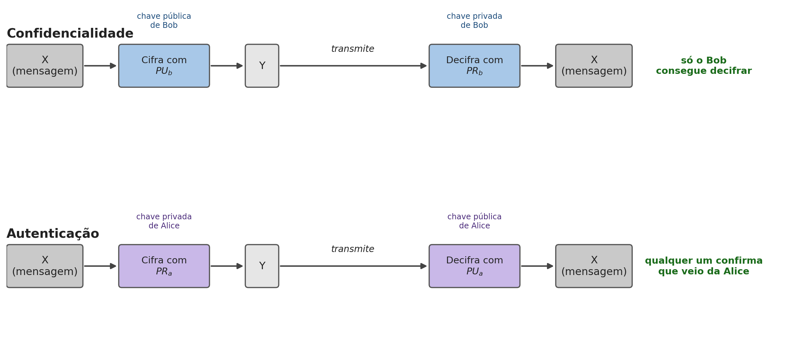
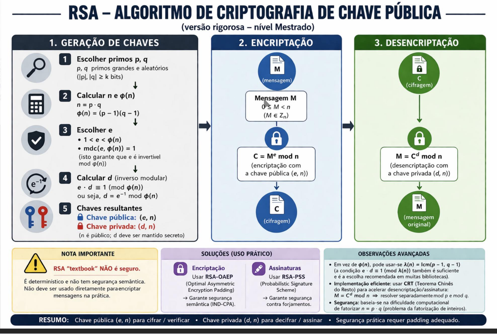
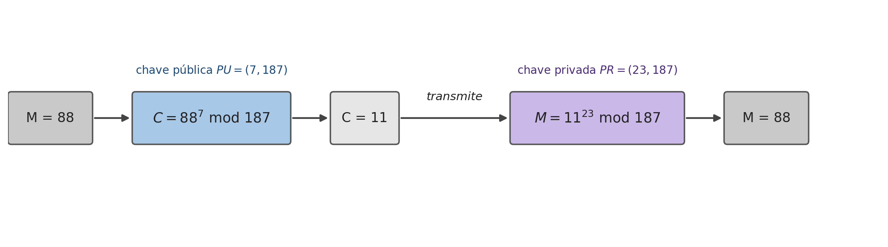

6 Criptografia Assimétrica e RSA
Introdução
Todos os capítulos anteriores, das cifras clássicas ao HMAC, partilham uma limitação estrutural: exigem uma chave secreta partilhada previamente entre emissor e receptor. Mas como é que dois desconhecidos, que nunca se encontraram e não têm nenhum canal seguro entre si, combinam essa chave em primeiro lugar? Este é o problema da distribuição de chaves, e durante décadas não teve resposta satisfatória. A solução, proposta por Diffie e Hellman em 1976 e concretizada por Rivest, Shamir e Adleman em 1977 com o algoritmo que dá nome a este capítulo, é radical: em vez de uma chave partilhada, cada participante passa a ter duas chaves matematicamente relacionadas, uma que pode divulgar livremente e outra que nunca revela a ninguém.
6.1 Criptografia Assimétrica: o Conceito
Um sistema de chave pública assenta em seis componentes (Stallings 2020): um algoritmo de cifragem, um algoritmo de decifragem, uma mensagem em texto claro, uma mensagem cifrada, e as duas chaves de cada participante, a chave pública (\(PU\)), livremente distribuída, e a chave privada (\(PR\)), mantida secreta pelo seu dono. A propriedade que torna isto útil é puramente matemática: o que quer que se cifre com uma das chaves de um par, só se decifra com a outra, nunca com a mesma.
Esta simples inversão de “que chave usar para quê” dá origem a dois esquemas distintos, com propósitos opostos:

Confidencialidade. Para enviar uma mensagem confidencial a Bob, Alice cifra-a com a chave pública de Bob (\(PU_b\)), que qualquer pessoa conhece:
\[Y = E[PU_b, X] \qquad X = D[PR_b, Y]\]
Só Bob consegue decifrar \(Y\), porque só ele tem \(PR_b\). Note-se que isto resolve exactamente o problema identificado na introdução: Alice nunca precisou de combinar nenhum segredo com Bob antecipadamente, só precisou de conhecer uma chave pública dele.
Autenticação. Para provar que uma mensagem vem mesmo de Alice, ela cifra-a com a sua própria chave privada (\(PR_a\)):
\[Y = E[PR_a, X] \qquad X = D[PU_a, Y]\]
Qualquer pessoa pode decifrar \(Y\) com a chave pública de Alice, \(PU_a\), que também é livremente conhecida, mas é precisamente por isso que este esquema não dá confidencialidade nenhuma. O que dá é a garantia de que só Alice podia ter produzido \(Y\), já que só ela possui \(PR_a\): é a base conceptual da assinatura digital, retomada num capítulo posterior.
Nada impede combinar os dois esquemas para obter ambas as propriedades ao mesmo tempo: Alice primeiro cifra com a sua própria chave privada (assina), e depois cifra o resultado com a chave pública de Bob (garante confidencialidade):
\[Z = E[PU_b,\, E[PR_a, X]]\]
Bob inverte as duas operações pela ordem inversa, \(X = D[PU_a,\, D[PR_b, Z]]\), obtendo simultaneamente a certeza de que a mensagem só podia ter vindo de Alice, e a garantia de que mais ninguém a conseguiu ler pelo caminho.
6.2 Categorias e Aplicações
Nem todos os algoritmos de chave pública servem os três usos possíveis (encriptação, assinatura digital, troca de chaves) igualmente bem:
| Algoritmo | Encriptação/Decriptação | Assinatura Digital | Troca de Chaves |
|---|---|---|---|
| RSA | Sim | Sim | Sim |
| Curva Elíptica | Sim | Sim | Sim |
| Diffie-Hellman | Não | Não | Sim |
| DSS | Não | Sim | Não |
O RSA, apresentado neste capítulo, é o único, ao lado da criptografia de curva elíptica, capaz de servir os três papéis. O Diffie-Hellman, capítulo seguinte, serve apenas para combinar uma chave partilhada; o DSS existe apenas para assinar.
6.3 RSA: Geração de Chaves
O RSA (Rivest, Shamir e Adleman, 1977) continua a ser o algoritmo de chave pública mais usado na prática, apesar de assentar num único problema matemático difícil: a factorização de números inteiros muito grandes. A geração do par de chaves segue cinco passos:

- Escolhem-se dois números primos grandes e aleatórios, \(p\) e \(q\).
- Calcula-se \(n = p \cdot q\) (o módulo, que será público) e \(\phi(n) = (p-1)(q-1)\) (a função totiente de Euler, que tem de se manter secreta).
- Escolhe-se \(e\) tal que \(1 < e < \phi(n)\) e \(\text{mdc}(e, \phi(n)) = 1\) (isto garante que \(e\) é invertível módulo \(\phi(n)\)).
- Calcula-se \(d\), o inverso modular de \(e\): \(d \cdot e \equiv 1 \pmod{\phi(n)}\).
- A chave pública é o par \((e, n)\); a chave privada é o par \((d, n)\). O módulo \(n\) é público, mas \(p\), \(q\), \(\phi(n)\) e \(d\) nunca são revelados.
6.4 RSA: Cifragem e Decifragem
Com as chaves geradas, cifrar e decifrar um bloco \(M\) (um número, \(0 \le M < n\)) resume-se a uma exponenciação modular:
\[C = M^e \bmod n \qquad\qquad M = C^d \bmod n = (M^e)^d \bmod n = M^{e \cdot d} \bmod n\]
Isto funciona porque \(e\) e \(d\) foram escolhidos de forma a serem inversos multiplicativos módulo \(\phi(n)\) (\(e \cdot d \equiv 1 \bmod \phi(n)\)), tal como, na aritmética normal, \(3\) e \(\frac{1}{3}\) são inversos porque \(3 \cdot \frac{1}{3} = 1\): elevar a \(e\) e depois a \(d\) (ou vice-versa) devolve sempre o valor original.
Um exemplo completo, com números pequenos apenas para ilustrar o mecanismo:
- Escolhem-se \(p=17\) e \(q=11\).
- \(n = 17 \times 11 = 187\); \(\phi(n) = 16 \times 10 = 160\).
- Escolhe-se \(e=7\) (relativamente primo com 160).
- Calcula-se \(d=23\), porque \((23 \times 7) \bmod 160 = 161 \bmod 160 = 1\).
- Chave pública \(= \{7, 187\}\); chave privada \(= \{23, 187\}\).

Para enviar a mensagem \(M=88\): \(C = 88^7 \bmod 187 = 11\). Para a recuperar: \(M = 11^{23} \bmod 187 = 88\).
6.5 Segurança: o que Torna o RSA Difícil de Quebrar — e Fácil de Usar Mal
O exemplo da secção anterior usa números pequenos só para tornar as contas possíveis à mão, mas isso tem um preço: com \(n=187\) (8 bits), factorizar \(n\) de volta em \(p=17\) e \(q=11\) é trivial, o que anula por completo a segurança do esquema. Na prática, recomenda-se \(n\) com pelo menos 2048 a 4096 bits, tornando a factorização computacionalmente inviável com os métodos e o poder de computação actualmente conhecidos, o problema da factorização de inteiros, do qual depende toda a segurança do RSA.
Vale a pena perceber porque é que este tamanho de chave é tão maior do que o de uma cifra simétrica (128 ou 256 bits, capítulos 3 e 4) para um nível de segurança comparável. O melhor algoritmo conhecido para factorizar inteiros grandes, o general number field sieve (GNFS), tem complexidade subexponencial: cresce mais lentamente do que uma pesquisa exaustiva (que custaria \(2^n\) operações para um valor de \(n\) bits), mas mais depressa do que um algoritmo polinomial, o que o torna significativamente mais rápido do que a força bruta pura, ainda que continue impraticável para módulos de milhares de bits (Stallings 2020). É precisamente esta existência de um atalho, mais rápido do que a força bruta mas não polinomial, que obriga o RSA a compensar com chaves muito maiores do que as de uma cifra simétrica: um módulo de 3072 bits é necessário para atingir o mesmo nível de segurança prático de uma chave simétrica de apenas 128 bits (Tabela 8.1, Capítulo 8).
Mesmo com um \(n\) suficientemente grande, usar o RSA exactamente como descrito acima, o chamado RSA “textbook”, não é seguro: é determinístico (a mesma mensagem produz sempre o mesmo texto cifrado, permitindo a um atacante reconhecer mensagens repetidas) e não oferece segurança semântica. Por isso, nenhuma biblioteca criptográfica séria implementa o RSA cru:
- Para encriptação, usa-se um esquema de padding como o RSA-OAEP (Optimal Asymmetric Encryption Padding), que introduz aleatoriedade antes de cifrar, garantindo que a mesma mensagem nunca produz o mesmo texto cifrado duas vezes.
- Para assinaturas, usa-se o RSA-PSS (Probabilistic Signature Scheme), que garante segurança contra falsificação de assinaturas, uma propriedade que o esquema simples da Secção 6.2 não oferece por si só.
Do lado do desempenho, é comum substituir \(\phi(n)\) por \(\lambda(n) = \text{mmc}(p-1, q-1)\) (a condição \(e \cdot d \equiv 1 \bmod \lambda(n)\) também é suficiente, e produz um \(d\) tipicamente mais pequeno), e usar o Teorema Chinês do Resto para acelerar a decifragem, resolvendo \(M = C^d \bmod n\) separadamente módulo \(p\) e módulo \(q\), e combinando os resultados, uma operação várias vezes mais rápida do que a exponenciação directa módulo \(n\).
6.6 Síntese do Capítulo
Este capítulo introduziu a segunda grande família da criptografia moderna:
- A criptografia assimétrica resolve o problema da distribuição de chaves: cada participante tem uma chave pública, livremente distribuída, e uma chave privada, nunca partilhada
- Cifrar com a chave pública do destinatário garante confidencialidade; cifrar com a chave privada do próprio garante autenticação; combinar as duas garante ambas
- O RSA, a curva elíptica, o Diffie-Hellman e o DSS não servem todos os mesmos propósitos: só o RSA e a curva elíptica servem encriptação, assinatura e troca de chaves em simultâneo
- O RSA gera as suas chaves a partir de dois primos grandes \(p\) e \(q\): \(n=pq\), \(\phi(n)=(p-1)(q-1)\), \(e\) coprimo com \(\phi(n)\), e \(d\) o seu inverso modular; cifra e decifra por exponenciação modular, \(C=M^e \bmod n\) e \(M=C^d \bmod n\)
- A segurança do RSA depende inteiramente da dificuldade de factorizar \(n\) em \(p\) e \(q\); com \(n\) pequeno (como no exemplo didáctico \(n=187\)), a factorização é trivial, por isso a norma actual exige \(n\) de pelo menos 2048 a 4096 bits
- O RSA “textbook” não é seguro por si só: usos reais exigem RSA-OAEP para encriptação e RSA-PSS para assinaturas
6.7 Para Pensar
O exemplo resolvido da Secção 6.4 usa \(n=187\) (8 bits), trivialmente factorizável, o que anula a sua segurança; a norma actual recomenda \(n\) de 2048 a 4096 bits. Em implementações reais de RSA, o expoente público \(e\) é normalmente um número pequeno e fixo (o valor \(e=65537\) é o mais comum), o mesmo em milhões de chaves diferentes por esse mundo fora, sem que isso comprometa a segurança de nenhuma delas. Tendo em conta de onde vem toda a segurança do RSA (Secção 6.5), porque é que aumentar o tamanho de \(e\), mantendo \(n\) pequeno, não tornaria o exemplo da Secção 6.4 mais seguro?